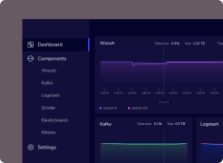

HTML + CSS reference
Build the layout by understanding who controls what.
This page explains the same portfolio patterns you can see in the browser: centered content, full-width colored sections, text beside an image, two cards, project rows, semantic HTML, class placement and mobile transformations. Open DevTools and inspect this page — the page itself uses these rules.
The mental model
Before writing CSS, identify the parent and its children. Layout properties normally belong to the parent. Properties that change one item normally belong to that item.
Parent controls the relationship between children
.hero — parent
.hero-copy
text child
text child
.hero-photo
image child
image child
The rule to remember
Parent = layout of children. Child = appearance/size of itself. Container = width of the page. Media query = only the mobile changes.
| You want to… | Put it on… | Typical CSS |
|---|---|---|
| Place two things beside each other | Their parent | display: flex/grid |
| Create space between those things | Their parent | gap |
| Center and limit page width | Container / wrapper | width, max-width, margin |
| Change one image | Image or image class | width, height, object-fit |
| Add space inside a card | The card | padding |
| Add space outside a block | The block | margin |
HTML structure: which element should you use?
Use semantic elements when they describe the job of the content. Use div when you only need a wrapper for layout or styling.
A normal page structure
<header> — top of the site, usually logo/navigation
<main> — unique main content of this page
<section> — one themed area, usually has a heading
<article>
independent card/post/work item
<article>
another independent item
independent card/post/work item
another independent item
<footer> — bottom/site information
| Element | Use it when… | Portfolio example |
|---|---|---|
header | It is the top/site header. | Navigation bar |
nav | It contains navigation links. | Works / Blog / Contact |
main | It wraps the unique content of the page. | Everything between header and footer |
section | It groups a topic/area and usually has a heading. | Hero, Recent posts, Featured works |
article | The item could make sense on its own. | One blog card or one work/project |
div | You only need a layout/styling wrapper. | .page-width, .work-copy, metadata wrapper |
HTML
<header class="site-header">
<nav class="desktop-nav">...</nav>
</header>
<main>
<section class="hero page-width">...</section>
<section class="recent-posts">
<div class="page-width">
<article class="post-card">...</article>
</div>
</section>
</main>
<footer class="site-footer">...</footer>Where should classes go?
A class should have a clear job. Do not create a class for every tag, but also do not force one huge class to control everything.
Stacking classes is normal
One element can have several classes separated by spaces. The browser applies all matching CSS rules.
.hero = layout
.page-width = width + centering
HTML
<section class="hero page-width">
<div class="hero-copy">
<h1>Hi, I am John</h1>
<p>...</p>
</div>
<img class="hero-photo" src="avatar.png" alt="Portrait">
</section>CSS
.page-width {
width: 90%;
max-width: 856px;
margin: 0 auto;
}
.hero {
display: grid;
grid-template-columns: 1fr 243px;
gap: 96px;
align-items: center;
}
.hero-photo {
width: 243px;
height: 243px;
object-fit: cover;
border-radius: 50%;
}
You do not need
class on every line.
If an element is unique inside a component, select it through its parent: .hero-copy h1 or .work-row img.
Create a class when the component is reusable, needs a special layout, differs from other elements, or is used by JavaScript.
Use a descendant selector when the element is already clearly identified by its parent, e.g.
.post-card h3.How to keep the whole page centered
The safest reusable pattern is a container. It becomes smaller on narrow screens but stops growing on large screens.
CSS — easy version
.page-width {
width: 90%;
max-width: 856px;
margin: 0 auto;
}width: 90% makes it responsive. max-width: 856px stops it from becoming too wide. margin: 0 auto centers it.
The compact version used by the portfolio
CSS — same idea
.page-width {
width: min(856px, calc(100% - 36px));
margin-inline: auto;
}min() chooses the smaller value: either 856px or the available width minus 36px. The 36px gives about 18px space on each side.
The content can be narrow while the browser is wide
Centered content
Full-width background + centered content
This is one of the most useful patterns in the design. The outer section owns the background. An inner container owns the content width.
The blue area reaches the edges; the content does not
.page-width
The text/cards stay centered and limited.
The text/cards stay centered and limited.
HTML
<section class="recent-posts">
<div class="page-width">
<h2>Recent posts</h2>
...
</div>
</section>CSS
.recent-posts {
background: #edf7fa;
padding: 20px 0 32px;
}
.page-width {
width: 90%;
max-width: 856px;
margin: 0 auto;
}
Do not put
max-width on the blue section.
If you do, the blue background becomes narrow too. Outer section = full-width background. Inner container = narrow centered content.
Flex or Grid?
You can build many layouts with either, but choosing consistently makes the code easier to understand.
| Situation | Prefer | Why |
|---|---|---|
| Navigation, metadata, icons, small row | Flex | You mainly care about one direction. |
| Text + image with controlled columns | Grid | You can explicitly define both columns. |
| Two equal cards | Grid | repeat(2, 1fr) gives equal columns. |
| Image 246px + text uses the rest | Grid | 246px 1fr describes it directly. |
| Center something horizontally + vertically | Flex/Grid | justify-content + align-items, or place-items. |
Flex
.meta {
display: flex;
align-items: center;
gap: 28px;
}Grid
.work-row {
display: grid;
grid-template-columns: 246px 1fr;
gap: 18px;
}Text on the left, image on the right
The parent controls the two-column layout. The image class controls the image dimensions. The text wrapper mainly gives you a clean selector for its heading and paragraph.
Live example — resize the browser below 700px
Hi, I am John,
Creative Technologist
Text fills the flexible column. The image keeps a predictable size.
Download ResumeHTML
<section class="hero page-width">
<div class="hero-copy">
<h1>Hi, I am John</h1>
<p>...</p>
<a class="button" href="#">Download Resume</a>
</div>
<img class="hero-photo" src="avatar.png" alt="Portrait">
</section>Desktop CSS
.hero {
display: grid;
grid-template-columns: 1fr 243px;
gap: 96px;
align-items: center;
padding: 80px 0 70px;
}
.hero-photo {
width: 243px;
height: 243px;
object-fit: cover;
border-radius: 50%;
}Why: 1fr means “use the remaining space for text.” 243px reserves a predictable image column. gap creates the space between them. align-items: center aligns the two children vertically.
Mobile
Mobile CSS
@media (max-width: 700px) {
.hero {
display: flex;
flex-direction: column;
gap: 36px;
text-align: center;
}
.hero-photo {
order: -1;
width: 174px;
height: 174px;
}
}You are allowed to change Grid to Flex at the breakpoint. The desktop layout is horizontal; the mobile layout is one vertical column. order: -1 moves the image above the text visually.
Two boxes beside each other
The grid parent decides how many cards fit in a row. Each card only controls its own padding, background and typography.
Two equal columns
Making a design system
Card content. The grid parent controls where this card sits.
Creating pixel perfect icons
Both cards receive exactly one fraction of the available width.
HTML
<div class="post-grid">
<article class="post-card">...</article>
<article class="post-card">...</article>
</div>Desktop CSS
.post-grid {
display: grid;
grid-template-columns: repeat(2, 1fr);
gap: 20px;
}
.post-card {
padding: 24px;
background: white;
border-radius: 4px;
}Mobile CSS
@media (max-width: 700px) {
.post-grid {
grid-template-columns: 1fr;
gap: 16px;
}
.post-card {
padding: 18px;
}
}display: grid does not need to be repeated inside the media query. It still applies. Only the column count and padding change.
Image on the left, text on the right
This is the featured-work pattern. Use an article because each project is a self-contained item.
Live work row

Designing Dashboards
The image has a fixed desktop box. The text column uses the rest of the row.
HTML
<article class="work-row">
<img src="project.jpg" alt="Project">
<div class="work-copy">
<h3>Designing Dashboards</h3>
<div class="work-meta">
<span class="year">2026</span>
<span class="category">Dashboard</span>
</div>
<p>Description...</p>
</div>
</article>Desktop CSS
.work-row {
display: grid;
grid-template-columns: 246px 1fr;
gap: 18px;
padding-bottom: 30px;
margin-bottom: 30px;
border-bottom: 1px solid #e0e0e0;
}
.work-row img {
width: 246px;
height: 180px;
object-fit: cover;
border-radius: 6px;
}
.work-meta {
display: flex;
align-items: center;
gap: 28px;
}Mobile CSS
@media (max-width: 700px) {
.work-row {
display: block;
}
.work-row img {
width: 100%;
height: auto;
margin-bottom: 14px;
}
}Why switch to display: block? A normal block layout naturally puts the image above the text. The image becomes fluid with width: 100%; height: auto.
Header and navigation
For a simple horizontal navigation, Flex is enough. Use a wider container than the main content if the design requires the nav to sit closer to the edges.
HTML
<header class="site-header">
<div class="header-inner">
<nav class="desktop-nav">
<a href="#">Works</a>
<a href="#">Blog</a>
<a href="#">Contact</a>
</nav>
<button class="menu-button">Menu</button>
</div>
</header>Desktop CSS
.header-inner {
width: 90%;
max-width: 1040px;
margin: 0 auto;
display: flex;
justify-content: flex-end;
align-items: center;
}
.desktop-nav {
display: flex;
gap: 34px;
}
.menu-button {
display: none;
}Mobile CSS
@media (max-width: 700px) {
.desktop-nav {
display: none;
}
.menu-button {
display: block;
}
}justify-content moves children along the main axis. In a normal row that means left/right. align-items controls the cross axis, normally vertical alignment.
Margin, padding and gap
| Property | Meaning | Typical place |
|---|---|---|
padding | Space inside an element. | Section, card, button. |
margin | Space outside an element. | Between headings/sections/cards. |
gap | Space between children of a Flex/Grid parent. | The parent. |
Padding shorthand
padding: 20px;
/* all sides */
padding: 20px 10px;
/* top/bottom | left/right */
padding: 20px 0 32px;
/* top | left/right | bottom */
padding: 10px 20px 30px 40px;
/* top | right | bottom | left */
Do not use random margins between Flex/Grid children if
gap can do the job.
The spacing rule belongs to the parent because the parent controls the relationship between the children.
Images without stretching or overflow
Safe default
img {
display: block;
max-width: 100%;
}Fixed image box
CSS
.hero-photo {
width: 243px;
height: 243px;
object-fit: cover;
border-radius: 50%;
}object-fit: cover keeps the image proportions and fills the box. Parts of the image may be cropped, but it is not distorted.
Fluid mobile image
CSS
.work-row img {
width: 100%;
height: auto;
}Use this when you want the image to scale with the container and keep its natural aspect ratio.
Typography and simple visual styling
Do layout first. Typography and decoration come after the structure works.
Common typography
body {
font-family: Helvetica, Arial, sans-serif;
font-size: 16px;
line-height: 1.5;
color: #21243d;
}
.hero-copy h1 {
font-size: 44px;
line-height: 1.35;
font-weight: 700;
}
.category {
color: #8695a4;
font-size: 20px;
}Button
.button {
display: inline-block;
padding: 10px 20px;
color: white;
background: #ff6464;
border-radius: 2px;
text-decoration: none;
}inline-block is useful for links styled like buttons because the link can keep inline flow while accepting reliable padding and dimensions.
Selectors and class stacking
| Selector | Meaning |
|---|---|
.hero | Any element with class hero. |
.hero-copy h1 | An h1 inside .hero-copy. |
.work-row img | An image inside .work-row. |
.desktop-nav a:hover | A link inside the nav while the pointer is over it. |
.mobile-nav.open | One element that has both classes. |
.works-page .work-row | A .work-row somewhere inside .works-page. |
Important difference
<nav class="mobile-nav open">...</nav>
.mobile-nav.open {
display: block;
}
/* SAME element has both classes */
.mobile-nav .open {
...
}
/* .open is a CHILD/DESCENDANT inside .mobile-nav */How to organize responsive CSS
Write the desktop/base layout first. Put the breakpoint near the bottom of the stylesheet and override only the properties that actually change.
Desktop
Text
Left side
Mobile idea
Text
Centered below image
The pattern
/* BASE / DESKTOP */
.post-grid {
display: grid;
grid-template-columns: repeat(2, 1fr);
gap: 20px;
}
/* MOBILE OVERRIDES */
@media (max-width: 700px) {
.post-grid {
grid-template-columns: 1fr;
gap: 16px;
}
}Typical desktop → mobile conversions
| Desktop | Mobile | Reason |
|---|---|---|
repeat(2, 1fr) | 1fr | Two cards become one per row. |
246px 1fr | display: block | Image goes above text. |
| Horizontal hero | flex-direction: column | Content stacks vertically. |
| Large image | Smaller width/height | Fits a narrow screen. |
| 44px heading | 30–32px heading | Prevents awkward wrapping. |
| Desktop nav shown | display: none | Hide crowded navigation. |
| Mobile control hidden | display: block | Show mobile replacement. |
A breakpoint like 700px is not magic. Choose the point where your layout stops fitting comfortably. For this portfolio-style layout, 700px is a simple useful breakpoint.
When to use order
Use order when the HTML order is good, but you need a different visual order at a breakpoint.
HTML order
<section class="hero">
<div class="hero-copy">TEXT</div>
<img class="hero-photo" src="avatar.png" alt="">
</section>The HTML order is TEXT → IMAGE. On mobile, you may want IMAGE → TEXT.
Mobile
@media (max-width: 700px) {
.hero {
display: flex;
flex-direction: column;
}
.hero-photo {
order: -1;
}
}order works on Flex/Grid items.
If the parent is not Flex or Grid, order will not rearrange the children.
Use flex-direction: column when you only need “beside each other → under each other.” Add order: -1 only if the mobile order also needs to change.
CSS property reference for this design
This is the set of properties you are most likely to need to recreate this type of portfolio layout.
Layout
display— block, flex, grid, none, inline-blockgrid-template-columns— define grid columnsflex-direction— row or columnjustify-content— main-axis alignmentalign-items— cross-axis alignmentgap— space between Flex/Grid childrenorder— visual order of Flex/Grid item
Size
width— element widthmax-width— maximum allowed widthmin-width— minimum allowed widthheight— fixed heightmin-height— minimum heightmax-height— maximum heightmin()/calc()— responsive calculations
Spacing
margin— outside spacemargin-inline— left/right logical marginmargin-bottom— outside space belowpadding— inside spacepadding-top/bottom— targeted inside spacinggap— controlled repeated spacing
Images
max-width: 100%— prevent overflowheight: auto— preserve aspect ratioobject-fit: cover— crop without distortionborder-radius— rounded/circle imagedisplay: block— remove inline image baseline gap
Typography
font-family— typefacefont-size— text sizefont-weight— thicknessline-height— line spacingcolor— text colortext-align— left/center/righttext-decoration— underline etc.
Surface / decoration
background— background colorborder— outlineborder-bottom— separator lineborder-radius— rounded cornersbox-shadow— shadowcursor: pointer— clickable cursor
Positioning / layers
position: relative— reference for positioned childrenposition: absolute— remove from normal flow and position preciselyposition: sticky— stay visible while scrollingtop/right/bottom/left— position offsetsz-index— layer order
Responsive / useful
@media— conditional styles by viewportbox-sizing: border-box— predictable sizingoverflow-x: auto— local horizontal scroll when neededscroll-behavior: smooth— smooth anchor movement:hover— pointer interaction state
What 1fr means
fr is a fraction of the available Grid space. repeat(2, 1fr) means two equal columns. 246px 1fr means a fixed 246px first column and a flexible second column.
Why box-sizing: border-box is worth using
CSS
* {
box-sizing: border-box;
}Padding and border are included inside the width you set. A 300px element with padding stays 300px wide instead of unexpectedly becoming wider.
Complete reusable starter template
This is intentionally small enough to understand, but it contains the major layout patterns from the design.
HTML
<!DOCTYPE html>
<html lang="en">
<head>
<meta charset="UTF-8">
<meta name="viewport" content="width=device-width, initial-scale=1.0">
<title>Portfolio</title>
<link rel="stylesheet" href="style.css">
</head>
<body>
<header>
<div class="header-inner">
<nav>
<a href="#">Works</a>
<a href="#">Blog</a>
<a href="#">Contact</a>
</nav>
</div>
</header>
<main>
<section class="hero container">
<div class="hero-copy">
<h1>Hi, I am John</h1>
<p>Short introduction...</p>
<a class="button" href="#">Download Resume</a>
</div>
<img class="hero-photo" src="avatar.jpg" alt="Portrait">
</section>
<section class="colored-section">
<div class="container">
<h2>Recent posts</h2>
<div class="cards">
<article class="card">First post</article>
<article class="card">Second post</article>
</div>
</div>
</section>
<section class="container">
<h2>Featured works</h2>
<article class="work">
<img src="project.jpg" alt="Project">
<div>
<h3>Project title</h3>
<p>Description...</p>
</div>
</article>
</section>
</main>
<footer>
<p>Footer</p>
</footer>
</body>
</html>CSS
* {
box-sizing: border-box;
}
body {
margin: 0;
font-family: Helvetica, Arial, sans-serif;
line-height: 1.5;
}
img {
display: block;
max-width: 100%;
}
.container {
width: 90%;
max-width: 856px;
margin: 0 auto;
}
/* HEADER */
.header-inner {
width: 90%;
max-width: 1040px;
margin: 0 auto;
padding: 24px 0;
display: flex;
justify-content: flex-end;
}
nav {
display: flex;
gap: 30px;
}
/* HERO */
.hero {
display: grid;
grid-template-columns: 1fr 243px;
gap: 60px;
align-items: center;
padding: 70px 0;
}
.hero-photo {
width: 243px;
height: 243px;
object-fit: cover;
border-radius: 50%;
}
.button {
display: inline-block;
padding: 10px 20px;
color: white;
background: #ff6464;
text-decoration: none;
}
/* FULL-WIDTH BACKGROUND + TWO CARDS */
.colored-section {
padding: 30px 0;
background: #edf7fa;
}
.cards {
display: grid;
grid-template-columns: repeat(2, 1fr);
gap: 20px;
}
.card {
padding: 24px;
background: white;
}
/* IMAGE + TEXT */
.work {
display: grid;
grid-template-columns: 246px 1fr;
gap: 20px;
padding: 30px 0;
border-bottom: 1px solid #ddd;
}
.work img {
width: 246px;
height: 180px;
object-fit: cover;
}
/* MOBILE */
@media (max-width: 700px) {
.hero {
display: flex;
flex-direction: column;
text-align: center;
}
.hero-photo {
order: -1;
width: 174px;
height: 174px;
}
.cards {
grid-template-columns: 1fr;
}
.work {
display: block;
}
.work img {
width: 100%;
height: auto;
margin-bottom: 15px;
}
}Common problems
| Problem | Check this |
|---|---|
gap does nothing | The parent must normally be display: flex or display: grid. |
order does nothing | The item must be a child of a Flex/Grid parent. |
| The page is not centered | Give the container a width/max-width and margin: 0 auto. |
| The blue background is only in the middle | You probably put the background on the constrained container instead of the outer section. |
| An image stretches | Use object-fit: cover for a fixed box or height: auto for a fluid image. |
| Cards overflow on mobile | Change multi-column Grid to 1fr in the media query. |
| Mobile CSS seems ignored | Check the viewport meta tag and make sure the media query comes after the base rule. |
| A 100% width element is still too wide | Use box-sizing: border-box and inspect padding/borders. |
Fast debugging question
“Which element should control this?” If it is about the relationship between several elements, inspect the parent. If it is only about one item, inspect that child.